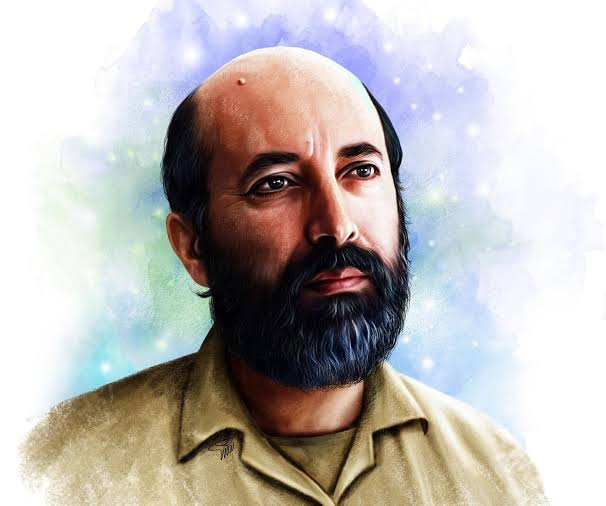

جلسه ۱ — مقدمه
جلسه ۱ — مقدمه
جلسه ۱ — مقدمه
جلسه ۱ — مقدمه

شهید دکتر مصطفی چمران فیزیک پلاسما — دانشگاه برکلیاز دادهها تا ماشینهای هوشمند — چرا هوش مصنوعی برای مهندس مکانیک حیاتی است؟
هوش مصنوعی چیست؟ چه تفاوتی با ML و DL دارد؟
چرا مهندس مکانیک باید AI بداند؟ کاربردهای واقعی
مسیر یادگیری از مبانی تا پژوهش
ادراک → استدلال → عمل → بازخورد
معرفی ChatGPT، Gemini، Claude و DeepSeek
مسئلههای مکانیک که AI حل میکند
رابطه بین چهار سطح اصلی هوش مصنوعی — روی هر کارت کلیک کنید.
هر سیستمی که رفتار هوشمندانه انسان را تقلید کند. چتر بزرگ و کلی.
استخراج الگو از دادههای ساختاریافته بدون برنامهنویسی صریح.
شبکههای عصبی چندلایه برای دادههای پیچیده (تصویر، سیگنال).
مدلهای عظیم پیشآموزشدیده با قابلیتهای عمومی (LLM، Vision).
هوش مصنوعی چهار موج بزرگ را پشت سر گذاشته است.
سیستمهای خبره، قوانین منطقی، ELIZA، MYCIN
مدلهای آماری، SVM، رگرسیون، Deep Blue
AlexNet، ResNet، RNN، Transformer — انقلاب DL
ChatGPT، Gemini، Agents، RAG، RLHF
از داده خام تا تصمیم و بازخورد — یک چرخه پیوسته بهبود.
جمعآوری، پاکسازی، برچسبگذاری
استخراج ویژگی، FFT، Embedding
آموزش، ارزیابی، بهینهسازی
تشخیص، طبقهبندی، پیشبینی
کنترل، هشدار، تصمیم
بهبود مستمر، یادگیری مجدد
اسلایدر «نرخ بازخورد» را تغییر دهید و ببینید سیستم چطور به هدف نزدیک میشود.
کشف الگوهای پنهان برای پیشبینی خرابی یاتاقانها پیش از وقوع.
ناوبری و کنترل هوشمند رباتهای نرم و صنعتی.
همگامسازی بلادرنگ سیستم فیزیکی و مدل مجازی.
کشف هندسههای پیچیده، سبک و بهینه برای ساخت.
جایگزینی کنترلرهای کلاسیک با یادگیری تقویتی (RL).
ترکیب معادلات دیفرانسیل و شبکههای عصبی (PINN).
سه رویکرد اصلی برای مدلسازی در مهندسی مکانیک.
| ویژگی | فیزیکمحور | دادهمحور | Scientific ML / PINN |
|---|---|---|---|
| پایه | معادلات دقیق (Navier-Stokes، نیوتن) | شبکههای عصبی و الگوها | ترکیب PDE + داده |
| سرعت | کند (حل عددی) | بسیار سریع (استنتاج) | دقیق، سریع، مقید به فیزیک |
| تفسیرپذیری | بالا | پایین (جعبه سیاه) | متوسط تا بالا |
| نیاز به داده | کم | بسیار زیاد | متوسط |
| کاربرد | طراحی دقیق | پیشبینی سریع | آینده مهندسی مکانیک |
یک مثال واقعی: از سیگنال ارتعاش تا تصمیم توقف خط تولید.
گیربکس صنعتی در حال کار تحت بار.
ثبت دادههای خام ارتعاش و دما با سنسور.
استخراج ویژگی با FFT و تبدیل فوریه.
طبقهبندی سالم / دارای عیب با CNN.
تصمیمگیری مهندسی: توقف اضطراری خط.
نویز و آستانه را تنظیم کنید و ببینید سیستم چه زمانی هشدار میدهد.
روی کلمه PINN کلیک کنید تا توضیح کامل باز شود.
به جای آموزش صرف از داده، معادلات فیزیکی (PDE) را در تابع هزینه شبکه عصبی قرار میدهیم.
نتیجه: مدلی که هم با داده سازگار است و هم فیزیک را نقض نمیکند.
نسبت داده و فیزیک را تغییر دهید و خطا را مقایسه کنید.
AI جایگزین مهندس مکانیک نمیشود، بلکه مهندسانی که به AI مسلطاند جایگزین سایرین خواهند شد.
دادههای دستاول و تمیز
مدلهای مناسب هر وظیفه
شهود فیزیکی مهندس
یک شبکه عصبی کوچک برای تقریب تابع سینوس.
% شبکه عصبی ساده برای تقریب sin(x) x = linspace(0, 2*pi, 100)'; y = sin(x); % ساخت شبکه: 1 لایه پنهان با 10 نورون net = fitnet(10); net.trainFcn = 'trainlm'; net.trainParam.epochs = 100; % آموزش net = train(net, x', y'); % پیشبینی y_pred = net(x'); plot(x, y, 'b-', x, y_pred, 'r--'); legend('واقعی', 'پیشبینی'); title('تقریب sin(x) با شبکه عصبی');
import numpy as np import matplotlib.pyplot as plt from sklearn.neural_network import MLPRegressor x = np.linspace(0, 2*np.pi, 100).reshape(-1, 1) y = np.sin(x).ravel() model = MLPRegressor(hidden_layer_sizes=(10,), max_iter=500, random_state=42) model.fit(x, y) y_pred = model.predict(x) plt.plot(x, y, 'b-', label='واقعی') plt.plot(x, y_pred, 'r--', label='پیشبینی') plt.legend() plt.show()
سه فرمول پایه که در تمام دوره استفاده میشوند.
[AI] HW01 - نام - شماره دانشجویی به arcslab.uth@gmail.com
در هر جلسه یک یا چند ابزار کاربردی برای پژوهش و کار مهندسی معرفی میشود.
مدل زبانی عمومی — کدنویسی، نگارش، تحلیل
جلسه ۱، ۱۸مدل چندوجهی گوگل — تصویر، متن، کد
جلسه ۱، ۱۱تحلیل متون طولانی و کدنویسی
جلسه ۱۸مدل باز و رایگان — عالی برای کد و ریاضی
جلسه ۱۸دستیار کدنویسی در VS Code
جلسه ۱۲جستوجوی مبتنی بر AI با منابع
جلسه ۲ChatGPT و Gemini را برای یک سؤال مکانیکی مقایسه کنید. ببینید کدام دقیقتر است و منابع را ذکر میکند. این تجربه را در HW01 بنویسید.
• قانون مور و راک
• Gartner Hype Cycle و روندهای AI
• ۱۰ مهارت برتر ۲۰۳۰ (World Economic Forum)
• Python بهعنوان زبان اصلی AI
• معرفی Perplexity بهعنوان ابزار پژوهش
۱. مخزن Google Drive خود را بسازید
۲. آن را با arcslab.uth@gmail.com به اشتراک بگذارید
۳. پوشه HW01 را ایجاد کنید
۴. تمرینهای جلسه ۱ را داخل آن قرار دهید
AI چتر بزرگ، ML زیرمجموعه یادگیری از داده، DL زیرمجموعه شبکه عصبی عمیق، Foundation Models مدلهای عظیم.
نگهداری پیشبینانه، رباتیک، Digital Twin، طراحی مولد، کنترل هوشمند، Scientific ML.
داده → بازنمایی → مدل → استدلال → اقدام → بازخورد → بهبود.
مهندسان مسلط به AI، جایگزین سایرین خواهند شد. فرمول: داده فیزیکی + معماری AI + دانش مهندسی = سیستم هوشمند.
ChatGPT و Gemini — مقایسه و تجربه در HW01.
جلسه بعد: آیندهپژوهی AI و مهارتهای ۲۰۳۰